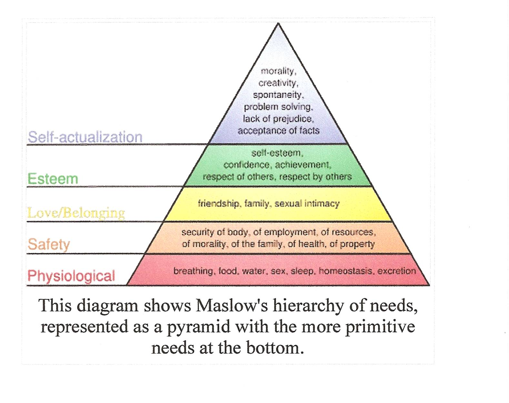

Commentary supporting the "Learning for Life" concept with focus on what drives learning. References Maslow's five-level hierarchy of basic needs as motivational foundation. Identifies learning as not a one-time event but an ongoing spiral curriculum involving addition of new competencies. Lists six core life roles derived from Oregon educational framework: Individual, Family Member, Citizen, Learner, Consumer, and Producer. Concise outline format with minimal elaboration.
- **Key People**: Maslow (referenced theorist), Oregon educational framework (source attribution)
- **Key Organizations**: Education 20/20 Inc. (implied)
- **Tags**: EDUCATION, PROFESSIONAL
- **Eulogy Relevance**: MEDIUM - Shows Don's systematic approach to understanding human development and the multifaceted nature of lifelong engagement through various social and personal roles.
A-3
COMMENTARY
LEARNING
FOR LIFE
A
drive to learn
Learning
What
drives learning:
Basic
needs – Maslow – 5 levels

Real
or imagined life roles - Oregon
Individual
Family
Member
Citizen
Learner
Consumer
Producer